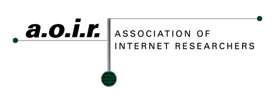

------
------
 |
Links to current info...
|
AoIR ActivitiesNavigationWho's onlineThere are currently 0 users and 38 guests online.
|
The Association of Internet Researchers is an academic association dedicated to the advancement of the cross-disciplinary field of Internet studies. It is a member-based support network promoting critical and scholarly Internet research independent from traditional disciplines and existing across academic borders. The association is international in scope. What are the most important things that AoIR does?
Members of AoIR enjoy additional benefits including access to talks and workshops, a discount on conference registration and an aoir.social account. Membership is $15-$65 a year. Join AoIR, the leading association for Internet research. Call for AoIR Conference Hosts, 2029 and 2030Submitted by admin on Sun, 2026-10-11 09:00. AoIR ConferencesThe 30th and 31st annual meetings are looking for host institutions and conference committees. If your institution would like to host AoIR2029 or AoIR2030, please send an expression of interest. 2026 Nancy Baym Book AwardSubmitted by admin on Thu, 2026-09-17 10:12. AwardsThe winner of this year's award is Archiving Machines: From Punch Cards to Platforms by Amelia Acker. The runner up is Healthy Users: The Governance of Social Media Well-being by Niall Docherty. The committee received nearly 30 nominations. 2026 Dissertation AwardSubmitted by admin on Thu, 2026-09-17 10:05. AwardsCongratulations to Dr. Dominique Carlon of the Queensland University of Technology, winner of the AoIR2026 Dissertation Award, and to our two honorable mentions. Legacy Lecture: Alternative PlatformsSubmitted by admin on Tue, 2026-09-01 14:30. Members Only ContentThe recording of our roundtable on alternative platforms is now available to members. Call for Proposals: 2027 Flashpoint SymposiumSubmitted by admin on Mon, 2026-08-31 08:47. AoIR ConferencesProposals are now open for the 2027 AoIR Flashpoint Symposium. |
User loginForum topicsActive forum topics: |